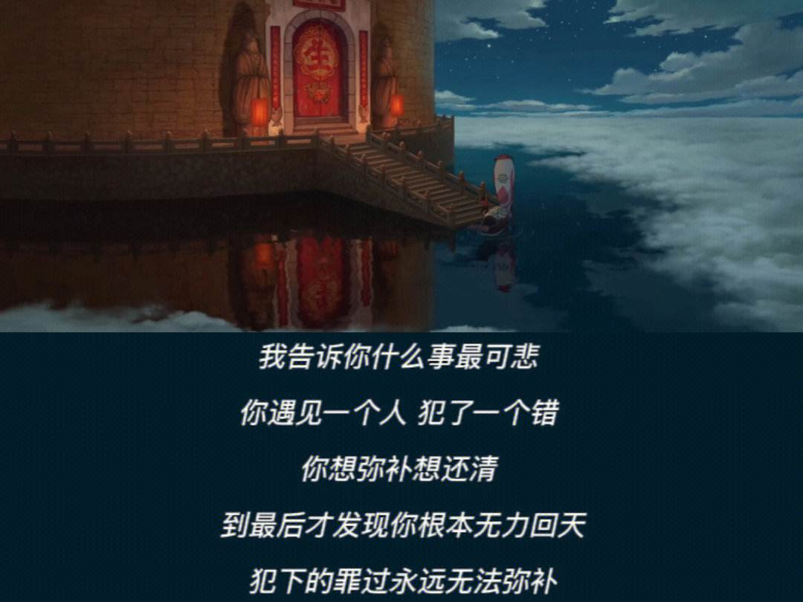
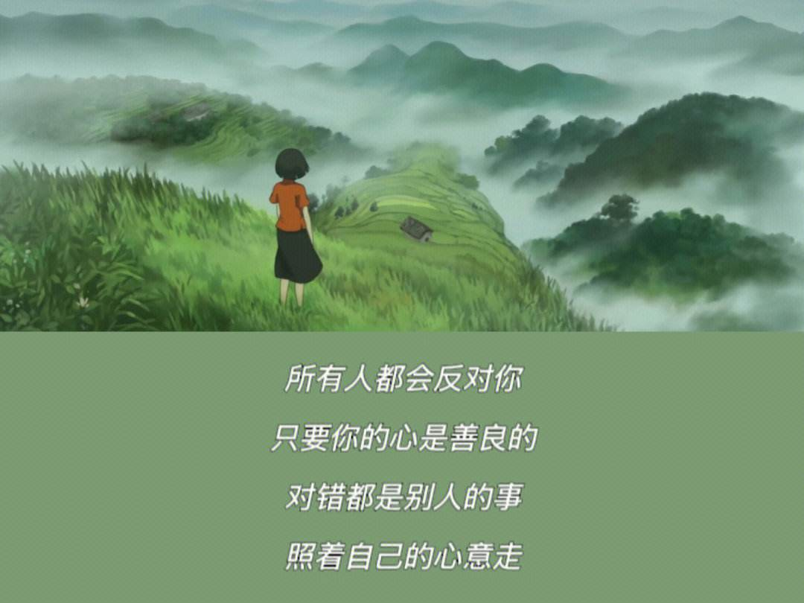

1、兄妹之情是最珍贵的亲情。
小时候不觉得，长大后各自有了家庭，不再朝夕相处，才明白：兄妹之情，姐弟之情，是人世间最珍贵的亲情。而两个人要一奶同胞，需要修多少世的缘分啊？想想现在很多独生子女，他们永远不会懂。
2、爱一个人不一定要得到，而是要她幸福。
有时人很奇怪，人就是这样，在身边看不到，不知道珍惜，总是舍近求远，投入别人的怀抱。而身边的那一个，并没有一定要得到你，他只要你幸福开心就好，他只是要在你身后保护你，远远地看着你就好。
3、犯了错有时要用生命来赎罪。
人一辈子会犯很多错误，有的错误可以弥补，有的错误却要付出生命的代价来偿还。那也没有别的话可说，有句话说得好，出来混，总是要还的。欠债还钱，欠情还情，人生来就是赎罪的。
4、我们最终都会死去，任何人都不例外。
很多人想永生，想长生不老，但那不可能，我们最终都会死去，只是早与晚。我们从生下来开始就在走向死亡。死亡大概是对每个人都最公平的一样东西了，任何人都没得选择。
5、你要相信，除了我们生活的这个世界，还有另外一个世界。
人不能太无法无天，要学会对万事万物充满敬畏之心，要相信平行世界的存在。也许有一天我们搬到别的星球上去，也许有一天别的星球上的人会来到地球。
6、父母永远是最牵挂我们的人。
无论你走多远，走到哪里，也无论你多大，聪明或者是个傻子，在父母眼里，所有的孩子都一样。你走到哪，父母的牵挂就跟到哪儿。你有你的全世界要走，但对他们来说，你就是他们的全世界。所以，爱自己，有时间就是爱他们。
7、人要知恩图报，哪怕付出生命的代价。
别人帮了你，一定要记在心里，做人要知道感恩，并找机会回报，哪怕是需要牺牲生命，人活着，总要有些骨气和追求，学会看淡生与死。
8、学会原谅，善待这个世界和身边人。
学会宽容地对待他人，试着去放下一些恩怨，原谅一些人和事，也许人生就会有不同，只有善待这个世界，也才会被这个是世界温柔以待。
